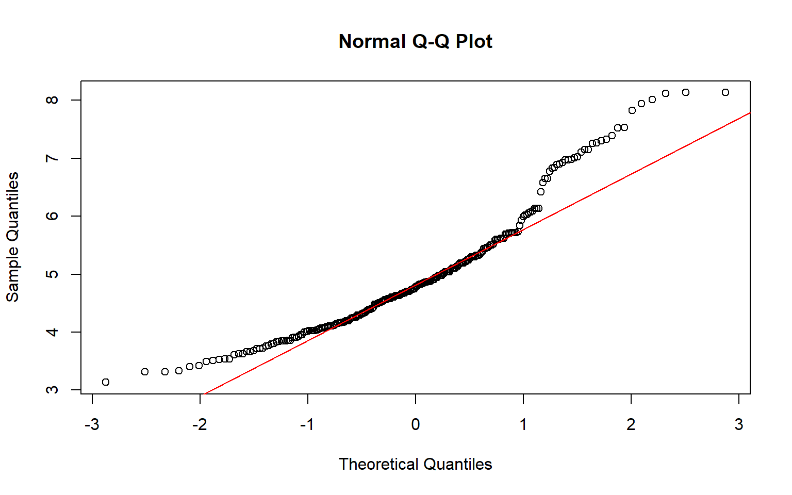
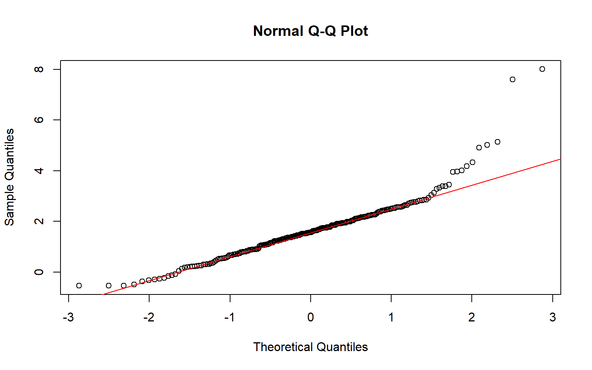

RNA Flow ~ Human
RNA Flow ~ Human
Background Information:
MAP vs Mean:
- The mean is the average value of a probability distribution, representing the central tendency based purely on the data. In contrast, the MAP (Maximum A Posteriori) estimate is the most likely value of a parameter in Bayesian statistics, incorporating both the observed data and prior beliefs.
Extracted essential information for the analysis:
Symbol: Gene Symbol
PUND: Predicted to Undergo Nucleosome Degradation
half_life_chr.Mean:
Mean (minutes) of how long RNA spends in the chromatin
half_life_nuc.Mean:
- Mean (minutes) of how long RNA spends in the nucleoplasm
half_life_cyto.Mean:
- Mean (minutes) of how long RNA spends in the cytoplasm
half_life_poly_entry.Mean:
- Mean (minutes) of how long RNA remains available in the cytoplasm for potential translation before being degraded or otherwise processed.
half_life_whole_cell.Mean
- Mean (minutes) of the total time RNA spends in the whole cell.
half_life_nucexp_from_nucres.MAP
- MAP (minutes) of the time it takes to export Non-Pund genes out of the nucleus
half_life_nucexp_from_nucdeg.MAP(PUND)
- MAP (minutes of the time it takes to export PUND gene out of the nucleus
Visualizing the Data
Upload Necessary Packages
# Load necessary packages
library(ggplot2)
library(dplyr)
library(MatchIt)
library(tidyr)
library(DescTools)
library(car)
library(PMCMRplus)Upload Necessary Files & Set Seed
# Set a seed for reproducibility
set.seed(56)
# Upload Buffered Gene Set
Buffering_Human_Data_Path <- "C:/Users/Aden Le/Documents/Cenik Lab/Research Project/RNA_flow/R_Stuff_Human/Human_Buffered_Genes.csv"
Buffering_Human_Data <- read.csv(Buffering_Human_Data_Path)
# Upload tidied Human Data
Human_Data_Path <- "C:/Users/Aden Le/Documents/Cenik Lab/Research Project/RNA_flow/R_Stuff_Human/Human_Data.csv"
Human_Data <- read.csv(Human_Data_Path)
#------------------------------------------------------------------
# Remove Excess Data
remove(Buffering_Human_Data_Path)
remove(Human_Data_Path)- Contains the average of the replicate means for all of the points of interest within the cell: Chromatin, Nucleoplasm, Cytoplasm, Polysome, and Whole Cell, Nuclear Export (PUND & Not PUND) & PUND Boolean
Rename and Reformat the Data
Human_Data$Match <- Human_Data$Symbol %in% Buffering_Human_Data$Symbo
#So I can left join it with the same column name
Buffering_Human_Data <- Buffering_Human_Data |>
rename(
"Symbol" = transcript
)
#Combine the Human buffering set with the Human Gene Set | Formats the data for matching
Human_Data <- left_join(Human_Data, Buffering_Human_Data, by = "Symbol")
Renamed_Human_Data <- Human_Data |>
rename(
"Chromatin" = Chromatin.Average,
"Nucleoplasm" = Nucleoplasm.Average,
"Cytoplasm" = Cytoplasm.Average,
"Untranslated Cytoplasm" = Polysome.Average
)
Human_Data_matchit <- Renamed_Human_Data |>
mutate(Buffering = case_when(
is.na(Group) ~ "TB3",
Group == "2" ~ "TB2",
Group == "1" ~ "TB1",
TRUE ~ NA_character_ # You can add a default case with TRUE if needed
))
Human_Data_matchit <- Human_Data_matchit %>%
mutate(match_it_order = case_when(
Buffering %in% c("TB1", "TB2") ~ 1, # Assign 1 for Buffering values TB1 and TB2
Buffering == "TB3" ~ 0, # Assign 0 for Buffering value TB3
TRUE ~ NA_real_ # Handle other cases with NA_real_ for numeric NA
))
#------------------------------------------------------------------
# Remove Excess Data
remove(Buffering_Human_Data_Path)
remove(Human_Data_Path)- Formats the data in preparation for matching
Match the Data on Whole Cell Average
# Matches the data based on Whole Cell Average
m.out <- matchit(match_it_order ~ Whole.Cell.Average, data = Human_Data_matchit, method = "nearest")
# Get the matched data
data_matched_human <- match.data(m.out)
#Expands the data so it can be graphed
data_long <- pivot_longer(data_matched_human,
cols = c("Chromatin", "Nucleoplasm", "Cytoplasm", "Untranslated Cytoplasm"),
names_to = "Variable",
values_to = "Value") |>
select(Gene, Symbol, PUND, Variable, Value,Buffering)# Convert Value column to numeric
# Convert Value column to numeric
data_long$Value <- as.numeric(data_long$Value)
# Identify the rows with NA values in the Value column
na_rows <- which(is.na(data_long$Value))
# Remove rows where Value column has NA
data_long_clean <- data_long[!is.na(data_long$Value), ]Plot the Data
data_long_clean$Buffering <- factor(data_long_clean$Buffering, levels = c("TB1","TB2","TB3"))
ggplot(data_long_clean, aes(Variable, Value, fill=factor(Buffering))) +
geom_boxplot(outlier.shape = NA, outlier.colour = "black", outlier.size = 0, notch = FALSE) +
geom_jitter(color = "black", size = 0.2, alpha = 0.4, position = position_jitterdodge(jitter.width = 0.3, dodge.width = 0.75)) +
coord_cartesian(ylim = c(0, 350))+
labs(
title = "Average RNA Linger Time versus Location | Matched on Whole Cell Average | Human",
x = "", # x-axis label
y = "Average Minutes",
fill = "" # Legend title
) +
scale_fill_manual(
values = c("lightblue", "lightgreen", "grey"), # Example colors
labels = c("TB1", "TB2", "TB3") # Example labels
) +
theme(
axis.text = element_text(size = 12),
axis.title = element_text(size = 12),
plot.title = element_text(hjust = 0.5),
panel.background = element_rect(fill = "white"),
panel.grid = element_blank(),
panel.border = element_rect(color = "black", size = 1, fill = NA),
panel.spacing = unit(0.5, "lines"),
legend.position = "top" # Position the legend at the top
)Significance Tests
Chromatin Significance
# Format the genes for the Chromatin Welch test
chromatin_genes <- filter(data_long_clean, Variable == "Chromatin") #Isolates the Chromatin Analysis
#---------------
# Chromatin | Separates based on Buffering score
group1 <- filter(chromatin_genes, Buffering == "TB1") |>
select(Value)
group2 <- filter(chromatin_genes, Buffering == "TB2") |>
select(Value)
group3 <- filter(chromatin_genes, Buffering == "TB3") |>
select(Value)
group1_transform <- log(as.numeric(unlist(group1)))
group2_transform <- log(as.numeric(unlist(group2)))
group3_transform <- log(as.numeric(unlist(group3)))
# Combine the groups into a data frame for testing
data_combined_chromatin <- data.frame(
value = c(group1_transform, group2_transform, group3_transform),
group = factor(rep(c("Group 1", "Group 2", "Group 3"),
c(length(group1_transform), length(group2_transform), length(group3_transform))))
)
#--------------
# Check normality for each group with a Shapiro test and visualize with a qqline plot
shapiro_test_group1 <- shapiro.test(group1_transform)
shapiro_test_group1
Shapiro-Wilk normality test
data: group1_transform
W = 0.87608, p-value = 2.561e-13
shapiro_test_group2 <- shapiro.test(group2_transform)
shapiro_test_group2
Shapiro-Wilk normality test
data: group2_transform
W = 0.94436, p-value = 4.862e-08
shapiro_test_group3 <- shapiro.test(group3_transform)
shapiro_test_group3
Shapiro-Wilk normality test
data: group3_transform
W = 0.88145, p-value < 2.2e-16
# Levene test shoud be greater than 0.05 to indicate normal distribution
levene_test_result <- leveneTest(value ~ group, data = data_combined_chromatin)
levene_test_result
Levene's Test for Homogeneity of Variance (center = median)
Df F value Pr(>F)
group 2 4.5851 0.01042 *
983
---
Signif. codes: 0 '***' 0.001 '**' 0.01 '*' 0.05 '.' 0.1 ' ' 1
# Welch Anova test, doesn't assume equal variance or equal sample sizes
welch_anova_result <- oneway.test(value ~ group, data = data_combined_chromatin)
welch_anova_result
One-way analysis of means (not assuming equal variances)
data: value and group
F = 9.1355, num df = 2.00, denom df = 550.97, p-value = 0.000125
# Games-Howell test, doesn't assume equal variance or equal sample sizes
games_howell_result <- gamesHowellTest(value ~ group, data = data_combined_chromatin)
print(games_howell_result)
Group 1 Group 2
Group 2 0.96622 -
Group 3 0.00725 0.00024Cytoplasm Significance
# Format the genes for the Chromatin Welch test
cytoplasm_genes <- filter(data_long_clean, Variable == "Cytoplasm") #Isolates the Chromatin Analysis
#---------------
# Chromatin | Separates based on Buffering score
group1 <- filter(cytoplasm_genes, Buffering == "TB1") |>
select(Value)
group2 <- filter(cytoplasm_genes, Buffering == "TB2") |>
select(Value)
group3 <- filter(cytoplasm_genes, Buffering == "TB3") |>
select(Value)
group1_transform <- log(as.numeric(unlist(group1)))
group2_transform <- log(as.numeric(unlist(group2)))
group3_transform <- log(as.numeric(unlist(group3)))
# Combine the groups into a data frame for testing
data_combined_cytoplasm <- data.frame(
value = c(group1_transform, group2_transform, group3_transform),
group = factor(rep(c("Group 1", "Group 2", "Group 3"),
c(length(group1_transform), length(group2_transform), length(group3_transform))))
)
#--------------
# Check normality for each group with a Shapiro test and visualize with a qqline plot
shapiro_test_group1 <- shapiro.test(group1_transform)
shapiro_test_group1
Shapiro-Wilk normality test
data: group1_transform
W = 0.91866, p-value = 2.147e-10
shapiro_test_group2 <- shapiro.test(group2_transform)
shapiro_test_group2
Shapiro-Wilk normality test
data: group2_transform
W = 0.98306, p-value = 0.005115
shapiro_test_group3 <- shapiro.test(group3_transform)
shapiro_test_group3
Shapiro-Wilk normality test
data: group3_transform
W = 0.95631, p-value = 6.551e-11
# Levene test shoud be greater than 0.05 to indicate normal distribution
levene_test_result <- leveneTest(value ~ group, data = data_combined_cytoplasm)
levene_test_result
Levene's Test for Homogeneity of Variance (center = median)
Df F value Pr(>F)
group 2 0.0639 0.9381
983
# Welch Anova test, doesn't assume equal variance or equal sample sizes
welch_anova_result <- oneway.test(value ~ group, data = data_combined_cytoplasm)
welch_anova_result
One-way analysis of means (not assuming equal variances)
data: value and group
F = 6.5525, num df = 2.00, denom df = 525.62, p-value = 0.001546
# Games-Howell test, doesn't assume equal variance or equal sample sizes
games_howell_result <- gamesHowellTest(value ~ group, data = data_combined_cytoplasm)
print(games_howell_result)
Group 1 Group 2
Group 2 0.0042 -
Group 3 0.0029 0.9550 Nucleoplasm Significance
# Nucleoplasm Welch Anova Test
#---------------
# Format the genes for the Chromatin Welch test
nucleoplasm_genes <- filter(data_long_clean, Variable == "Nucleoplasm") #Isolates the Chromatin Analysis
#---------------
# Nucleoplasm | Separates based on Buffering score
group1 <- filter(nucleoplasm_genes, Buffering == "TB1") |>
select(Value)
group2 <- filter(nucleoplasm_genes, Buffering == "TB2") |>
select(Value)
group3 <- filter(nucleoplasm_genes, Buffering == "TB3") |>
select(Value)
group1_transform <- log(as.numeric(unlist(group1)))
group2_transform <- log(as.numeric(unlist(group2)))
group3_transform <- log(as.numeric(unlist(group3)))
# Combine the groups into a data frame for testing
data_combined_nucleoplasm <- data.frame(
value = c(group1_transform, group2_transform, group3_transform),
group = factor(rep(c("Group 1", "Group 2", "Group 3"),
c(length(group1_transform), length(group2_transform), length(group3_transform))))
)
#--------------
# Check normality for each group with a Shapiro test and visualize with a qqline plot
shapiro_test_group1 <- shapiro.test(group1_transform)
shapiro_test_group1
Shapiro-Wilk normality test
data: group1_transform
W = 0.92656, p-value = 9.008e-10
shapiro_test_group2 <- shapiro.test(group2_transform)
shapiro_test_group2
Shapiro-Wilk normality test
data: group2_transform
W = 0.93833, p-value = 1.269e-08
shapiro_test_group3 <- shapiro.test(group3_transform)
shapiro_test_group3
Shapiro-Wilk normality test
data: group3_transform
W = 0.9646, p-value = 1.602e-09
# Levene test shoud be greater than 0.05 to indicate normal distribution
levene_test_result <- leveneTest(value ~ group, data = data_combined_nucleoplasm)
levene_test_result
Levene's Test for Homogeneity of Variance (center = median)
Df F value Pr(>F)
group 2 1.6545 0.1917
984
# Welch Anova test, doesn't assume equal variance or equal sample sizes
welch_anova_result <- oneway.test(value ~ group, data = data_combined_nucleoplasm)
welch_anova_result
One-way analysis of means (not assuming equal variances)
data: value and group
F = 3.9033, num df = 2.00, denom df = 502.58, p-value = 0.02079
# Games-Howell test, doesn't assume equal variance or equal sample sizes
games_howell_result <- gamesHowellTest(value ~ group, data = data_combined_nucleoplasm)
print(games_howell_result)
Group 1 Group 2
Group 2 0.016 -
Group 3 0.093 0.467 Polysome Significance
# Untranslated Cytoplasm Welch Anova Test
#---------------
# Format the genes for the Chromatin Welch test
untranslated_cytoplasm_genes <- filter(data_long_clean, Variable == "Untranslated Cytoplasm") #Isolates the Chromatin Analysis
#---------------
# Untranslated Cytoplasm | Separates based on Buffering score
group1 <- filter(untranslated_cytoplasm_genes, Buffering == "TB1") |>
select(Value)
group2 <- filter(untranslated_cytoplasm_genes, Buffering == "TB2") |>
select(Value)
group3 <- filter(untranslated_cytoplasm_genes, Buffering == "TB3") |>
select(Value)
group1_transform <- log(as.numeric(unlist(group1)))
group2_transform <- log(as.numeric(unlist(group2)))
group3_transform <- log(as.numeric(unlist(group3)))
# Combine the groups into a data frame for testing
data_combined_untranslated_cytoplasm <- data.frame(
value = c(group1_transform, group2_transform, group3_transform),
group = factor(rep(c("Group 1", "Group 2", "Group 3"),
c(length(group1_transform), length(group2_transform), length(group3_transform))))
)
#--------------
# Check normality for each group with a Shapiro test and visualize with a qqline plot
shapiro_test_group1 <- shapiro.test(group1_transform)
shapiro_test_group1
Shapiro-Wilk normality test
data: group1_transform
W = 0.96518, p-value = 9.786e-06
shapiro_test_group2 <- shapiro.test(group2_transform)
shapiro_test_group2
Shapiro-Wilk normality test
data: group2_transform
W = 0.90564, p-value = 2.702e-11
shapiro_test_group3 <- shapiro.test(group3_transform)
shapiro_test_group3
Shapiro-Wilk normality test
data: group3_transform
W = 0.92653, p-value = 8.967e-15
# Levene test shoud be greater than 0.05 to indicate normal distribution
levene_test_result <- leveneTest(value ~ group, data = data_combined_untranslated_cytoplasm)
levene_test_result
Levene's Test for Homogeneity of Variance (center = median)
Df F value Pr(>F)
group 2 2.0532 0.1289
981
# Welch Anova test, doesn't assume equal variance or equal sample sizes
welch_anova_result <- oneway.test(value ~ group, data = data_combined_untranslated_cytoplasm)
welch_anova_result
One-way analysis of means (not assuming equal variances)
data: value and group
F = 51.848, num df = 2.00, denom df = 534.41, p-value < 2.2e-16
# Games-Howell test, doesn't assume equal variance or equal sample sizes
games_howell_result <- gamesHowellTest(value ~ group, data = data_combined_untranslated_cytoplasm)
print(games_howell_result)
Group 1 Group 2
Group 2 1.3e-08 -
Group 3 1.6e-10 0.00087Brief Summary
- According to the results of the Games-Howell test, the RNA of buffered genes spend significantly more time in the chromatin, polysome, and possibly the cytoplasm than non-buffered genes